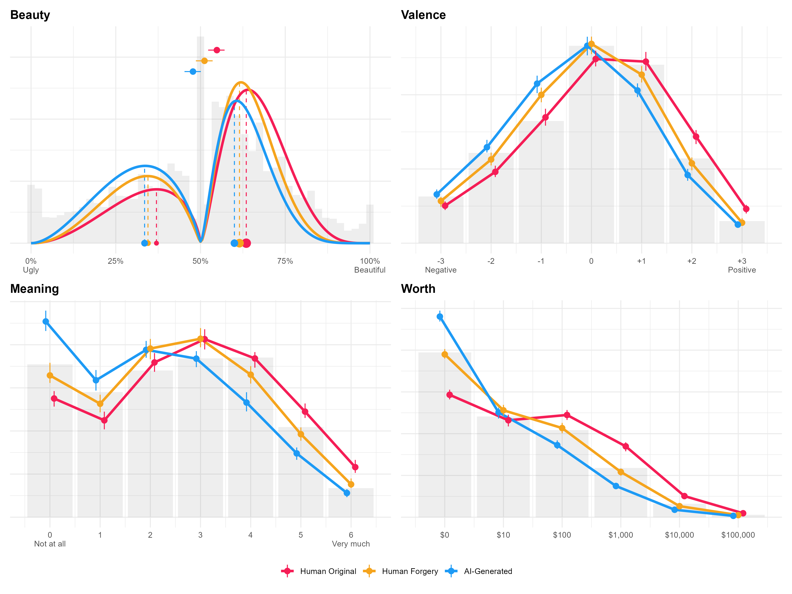
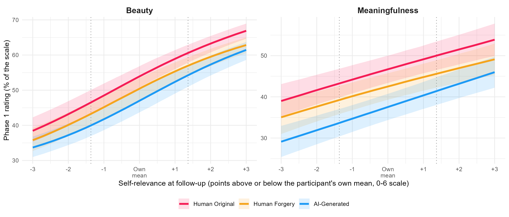

Not All Fakes Are Equally Ugly: Disentangling the role of Syntheticness and Authenticity Beliefs in Aesthetic Experience
Dominique Makowski1,2, Ana Neves1, Giulia Cabbai3, and Marco Sperduti4
1School of Psychology, University of Sussex
2Sussex Centre for Consciousness Science, University of Sussex
3UCL
4Department of Medicine, University of Tor Vergata
Author Note
Dominique Makowski  https://orcid.org/0000-0001-5375-9967
https://orcid.org/0000-0001-5375-9967
Ana Neves  https://orcid.org/0009-0006-0020-7599
https://orcid.org/0009-0006-0020-7599
Giulia Cabbai  https://orcid.org/
https://orcid.org/
Marco Sperduti  https://orcid.org/
https://orcid.org/
Author roles were classified using the Contributor Role Taxonomy (CRediT; https://credit.niso.org/) as follows: Dominique Makowski: project administration, data curation, formal analysis, investigation, visualization, writing – original draft, and writing – review & editing. Ana Neves: project administration and writing – review & editing. Marco Sperduti: project administration, writing – original draft, and writing – review & editing
Correspondence concerning this article should be addressed to Dominique Makowski, School of Psychology, University of Sussex, Brighton BN1 9RH, UK, Email: D.Makowski@sussex.ac.uk
Abstract
TODO
Keywords: TODO, TODO2
Not All Fakes Are Equally Ugly: Disentangling the role of Syntheticness and Authenticity Beliefs in Aesthetic Experience
In October 2018, Christie’s auctioned Portrait of Edmond de Belamy, an image produced by the French collective Obvious using a generative adversarial network, for over $400,000. Four years later, an image created with Midjourney by Jason Michael Allen won first prize in a digital art competition at the Colorado State Fair, triggering a public controversy about the legitimacy of algorithmically produced art. These two episodes crystallize a tension that runs through the psychology of art appreciation: artificial intelligence (AI) is now able to produce images that enter markets, competitions, and museums on apparently equal footing with human productions, yet the same public that grants AI this economic and cultural legitimacy tends to devalue its output as soon as its algorithmic origin is revealed. A growing body of empirical work has documented this negative bias against art attributed to AI across a wide range of materials and paradigms. The effect has been reported for visual art (Bellaiche et al., 2023; Chiarella et al., 2022; Di Dio et al., 2023; Gangadharbatla, 2022; Ragot et al., 2020) [TODO: Zhang et al., 2025 ?], for poetry and creative writing (Porter & Machery, 2024; Raj et al., 2023), for music (Ansani et al., 2025; Shank et al., 2022), and, with important cultural nuances, in cross-national comparisons of explicit and implicit attitudes (Wu et al., 2020). Raj et al. (2023) offer perhaps the most systematic demonstration of the phenomenon’s robustness: across sixteen preregistered experiments and more than 27,000 participants, disclosing that a piece of creative writing had been produced by AI systematically lowered evaluations of its quality, creativity, and enjoyability, an “AI disclosure penalty” that resisted a wide array of moderation strategies, including collaborative human–AI framing and the humanization of the AI agent. A recent meta-analysis by De Rooij (2025), focused specifically on visual art, confirms that this devaluation is not an isolated laboratory curiosity: the effect is broad, generalizes across studies, and is moderated by factors such as participants’ age, artistic style, the true source of the image, and the presentation context, but is consistently larger for judgments that require attributing meaning, intention, or depth to the artwork than for judgments of low-level sensory qualities.
This last observation already points toward the central puzzle that motivates the present work. If the bias were rooted in genuine perceptual differences between human and AI-generated images, it should scale with people’s ability to actually tell the two apart. Empirically, the opposite pattern is observed. In blind evaluation conditions, without any information about authorship, observers are typically unable to discriminate AI-generated from human-made images above chance level (Gangadharbatla, 2022; Ragot et al., 2020). Zhou and Kawabata (2023) directly tested this dissociation using a free-viewing and categorization paradigm: participants’ gaze behavior and subjective ratings of beauty, liking, valence, and arousal differed according to which paintings they believed to be human- or AI-made, yet their objective accuracy at identifying the true authorship of AI-generated representational paintings was poor. Porter and Machery (2024) report an analogous pattern for poetry: AI-generated poems were indistinguishable from human-written ones under blind evaluation, and in some conditions were even rated more favorably, before being devalued once their artificial origin was disclosed. The bias, in other words, does not track the observer’s actual capacity to detect an algorithmic signature in the stimulus. It tracks belief.
This dissociation between perceptual indistinguishability and post-disclosure devaluation suggests that the anti-AI bias is better understood as a high-level, cognitive phenomenon than as a perceptual one. Direct evidence for this claim comes from studies that manipulate processing mode while holding the stimulus constant. Chiarella et al. (2022), testing visitors in an actual art exhibition, manipulated the attribution of authorship of two identical abstract paintings and found that the aesthetic devaluation of the “AI” painting emerged only in explicit comparative judgment; concurrent psychophysiological measures of affective engagement (electrodermal activity, heart rate) showed no corresponding modulation, suggesting that early, implicit affective responses to the image were left largely intact. Wang et al. (2026) [TODO: this Pleasure-Interest Model / cognitive-load reference could not be located/verified in the literature; please confirm the citation or remove the claim], using the Pleasure–Interest Model of Aesthetic Liking, manipulated authorship labels on images that were in fact all AI-generated and orthogonally manipulated whether participants evaluated them under time pressure and cognitive load (favoring automatic, stimulus-driven processing) or under conditions that encouraged reflective, meaning-oriented engagement. The AI label reduced appreciation in both conditions, but the effect was roughly four times larger under controlled, reflective processing, and providing participants with brief interpretive descriptions of the artwork closed much of the gap by increasing interest rather than sensory pleasure. Converging evidence at the neural level comes from Zhang et al. (2025), who found that identical paintings labeled as human-made evoked greater activation of the right angular gyrus (a region implicated in semantic integration and episodic memory) than the same paintings labeled as AI-generated, and from Bara et al. (2025), whose work on implicit and explicit measures of moral and aesthetic judgment toward AI art suggests that the bias operates mainly at an explicit, deliberate, context-sensitive level rather than as an automatic affective association. Taken together, these findings converge on a single conclusion: the anti-AI bias is not primarily a failure of the visual system to find AI images pleasing, but a consequence of what the label “AI” does to the higher-order cognitive processes through which an observer constructs meaning, intention, and value around an aesthetic object.
This conclusion invites us to return to general cognitive models of aesthetic experience to ask where, exactly, in the chain of processing the label intervenes. In the influential model proposed by Leder et al. (2004) and updated by Leder and Nadal (2014), aesthetic experience unfolds through a sequence of stages moving from automatic to deliberate processing: perceptual analysis, implicit memory integration, explicit classification, cognitive mastering, and evaluation, culminating in two outputs, an aesthetic judgment and an aesthetic emotion. Two stages in this model are natural candidates for where an authorship label could exert its effect: memory integration, where formal features of the artwork are related to prior knowledge and expectations, and cognitive mastering, where the observer interprets the work in light of personal experience, biography, and expectations about the artist’s intention. If information about AI authorship is integrated at these stages, it should selectively depress judgments that depend on inferred intentionality, meaning, and personal connection, while leaving more perceptually driven components of the aesthetic response comparatively untouched—precisely the pattern documented above. On the basis of this framework, and of the literature reviewed so far, at least three candidate mechanisms emerge as plausible drivers of the anti-AI bias: attributed originality and authenticity, the affective properties of the stimulus itself, and the personal relevance of the artwork to the observer. Each of these mechanisms motivates a specific methodological choice in the present study.
Attributed originality and authenticity
The first candidate mechanism concerns the value historically attached to originals over copies. Newman and Bloom (2012), in a influential series of experiments, showed that people value original artworks over perceptually indistinguishable duplicates because of a principle of positive contagion: the original is believed to carry the physical and symbolic trace of the artist’s body, hand, and intention, a trace that a reproduction cannot carry. A neuroimaging study by Huang et al. (2011) offers striking physiological support for this idea: when the same Rembrandt portraits were labeled as “copy” rather than “authentic”, viewing evoked stronger activation in frontopolar cortex and right precuneus, and the correlation between these regions and occipital visual areas increased - consistent with participants actively engaging effortful, hypothesis-testing processes to look for evidence supporting the assigned label, regardless of whether the picture was in fact genuine or false. This shows that a mere verbal assignment of authenticity status is sufficient to reorganize the brain’s engagement with an image, independently of its physical properties. At the same time, a meta-analysis by Specker et al. (2023) on the related “genuineness effect” - the presumed superiority of experiencing a physical original over a reproduction - found that the effect largely disappears once the confound between genuineness and museum-versus-laboratory context is properly controlled, a result compatible with the facsimile accommodation hypothesis, according to which observers can “see past” the reproduction and respond to it much as they would to the original. This body of work is important for the present study because it suggests that authenticity-related devaluation is not an all-or-nothing effect of “real versus fake”, but is graded by what, specifically, the label communicates about the causal and intentional history of the object. Consistent with this graded view, Raj et al. (2023) show that the relation between AI disclosure and evaluative devaluation is itself mediated by shifts in perceived authenticity, further underscoring that the anti-AI bias and authenticity-related devaluation share a common underlying mechanism rather than being independent phenomena.
This distinction has a direct methodological consequence. Much of the AI-art literature has manipulated only a human-versus-AI authorship contrast (Bellaiche et al., 2023; Chamberlain et al., 2018; Gangadharbatla, 2022; Grassini & Koivisto, 2024; Ragot et al., 2020), which conflates two logically separable properties: not being an authentic original, and not being of human origin at all. A painting attributed to a human copyist is also not the artist’s original, yet it retains a human intentional history; a painting attributed to AI lacks both. Comparing only “human original” against “AI” therefore cannot determine whether devaluation reflects a generic non-originality penalty or a penalty specific to non-human authorship. Israfilzade (2020) further shows that titles and authorship labels can carry connotations beyond authenticity alone - in their study, an AI attribution increased perceived novelty of abstract paintings without affecting perceived complexity or ambiguity - underscoring that label effects are multidimensional and cannot be reduced to a single authenticity judgment. To disentangle these components, the present study manipulates the presumed authorship of a set of artworks that were, in every case, actually created by human artists, assigning each piece one of three labels: human original, human copy, or AI-generated. This copy condition, directly inspired by the authentic-versus-copy manipulation of Newman and Bloom (2012) and Huang et al. (2011), makes it possible to isolate a bias that is specific to the AI label from a more general non-originality penalty, and thereby to test directly whether the anti-AI bias reduces to an authenticity problem or constitutes something more specific to algorithmic authorship.
Affective response in aesthetic evaluation: valence and arousal and the interoceptive grounding of emotion
The second candidate mechanism concerns the affective properties of the artwork. Emotional processes occupy a central place in every stage-based model of aesthetic experience (Leder et al., 2004; Leder & Nadal, 2014), and a growing literature on “aesthetic emotions” treats the arousal and valence elicited by a stimulus as core, and partly independent, determinants of liking (Chiarella et al., 2022). Chiarella et al. (2022) used electrodermal activity and heart rate as converging but dissociable indices of this affective engagement, following the classical proposal that arousal is better indexed by skin conductance and valence by cardiac measures. Zhou and Kawabata (2023) explicitly incorporated separate ratings of emotional valence and arousal, alongside beauty, liking, familiarity, and concreteness, as core dependent measures in their study of AI-art perception, arguing that a bipolar pleasant–unpleasant scale is insufficient to capture the emotional texture of an aesthetic response, and found that these dimensions of affective response, like the beauty and liking ratings themselves, were similarly shaped by believed authorship rather than by the images’ true origin. In our own group’s related work, Salgues et al. (2024) showed that retrospective ratings of both the valence and the intensity of the emotional reaction to a painting reliably predicted judgments of beauty, indicating that affective response is not merely a byproduct of aesthetic judgment but one of its structuring inputs. Wu et al. (2020) similarly found that the degree to which a piece of art was perceived to “evoke emotion” shaped both explicit and implicit appraisals of authorship-attributed artworks, in ways that differed markedly between American and Chinese participants: American participants’ explicit appraisals were more strongly driven by perceived emotional evocation than those of Chinese participants, for whom implicit, evocation-linked associations played a comparatively larger role.
A growing body of work suggests that this affective dimension of aesthetic experience is not purely cognitive but is grounded, at least in part, in the perception of one’s own bodily state - that is, in interoception. Cabbai et al. (2023), combining physiological recordings with self-report, found that skin conductance response directly and positively predicted both liking and being-moved ratings for visual artworks, independently of art type, and that participants’ interoceptive accuracy (assessed via a heartbeat-counting task) and interoceptive sensibility (assessed via self-report) selectively modulated emotional-intensity ratings, particularly in response to representational art. Using a very different kind of stimulus, Washizu et al. (2025) mapped the bodily sensations that accompany the aesthetic evaluation of everyday photographs and found that higher beauty ratings were specifically associated with chest-centered bodily sensations, that beauty tracked high-valence emotion categories, and that self-reported interoceptive awareness - while not directly related to beauty ratings - was nonetheless related to the overall intensity of reported bodily sensations. In the domain of immersive, participatory art, Kühnapfel et al. (2023) similarly found that visitors’ bodily experience of an installation clustered into interpretable dimensions (including disturbance-related and interoceptive sensations such as heartbeat and breathing) that predicted artistic experience. The interoceptive cluster was specifically linked to interest. Together, these findings indicate that the affective response an artwork elicits is partly constituted by, or at least reliably co-occurs with, the observer’s felt bodily state, and that stable individual differences in how people attend to and report on that bodily state, can possibly modulate aesthetic experience.
Because affective response appears to be a driver of aesthetic appreciation, it is essential to control for it directly when comparing labeled conditions, otherwise, apparent “authorship effects” could in fact be confounded with pre-existing differences in the emotional profile of the stimuli themselves. For this reason, in the present study, we select stimuli that drawn from a standardized set of paintings with normative subjective ratings, so as to sample systematically across the affective space defined by valence and arousal. This design choice allows us to enter normative valence and arousal directly as predictors alongside the manipulated authorship label, and to ask whether affective properties modulate the anti-AI bias.
The evidence that emotional responses to art are partly embodied and interoceptively grounded also motivates a further, exploratory component of the present design. If, as Cabbai et al. (2023) and Washizu et al. (2025) suggest, individual differences in interoceptive sensibility shape how strongly bodily and affective signals feed into aesthetic evaluation, then such differences could plausibly also shape sensitivity to the anti-AI bias itself. On one hand, individuals who are more attuned to their own bodily and affective reactions might rely more heavily on this immediate, embodied signal when judging an artwork, and correspondingly less on the more abstract, belief-based inference triggered by an authorship label. This would predict a weaker label effect for participants high in interoceptive sensibility. On the other hand, insofar as interoceptive sensibility indexes a more general responsiveness to internally generated meaning, it could instead amplify the evaluative gap between conditions that succeed versus fail at engaging this internal resonance. Because the existing literature does not adjudicate between these possibilities, and because no study to date has examined interoceptive sensibility in the specific context of authorship-based bias, we include a brief, validated self-report measure of interoceptive sensibility in the present study and treat its relationship to both aesthetic judgment and the magnitude of the label effect as an exploratory question.
Self-relevance as a candidate mechanism of resonance
The third candidate mechanism is self-relevance: the degree to which an artwork connects to the observer’s own autobiographical memories, identity, interests, and lived experience. The centrality of this dimension in aesthetic experience is well established independently of any question about AI. Vessel et al. (2012) earlier neuroimaging work had already shown that the most intensely moving aesthetic experiences recruit the brain’s default mode network, a system associated with autobiographical memory, self-referential thought, and internally directed cognition (Martinelli et al., 2013). Building on this tradition, Lee et al. (2023) exploited the self-reference effect in memory - the well-established finding that information encoded with reference to the self is subsequently better remembered than information encoded semantically or with reference to another person - as an implicit, objective index of aesthetic engagement: paintings that received extreme aesthetic judgments were remembered as well as paintings that had been explicitly encoded in a self-referential judgment task, suggesting that aesthetic judgment and self-referential processing draw on shared cognitive resources. Salgues et al. (2024) refined this result across two studies and showed that the mnemonic advantage conferred by aesthetic judgment is closely tied to both self-relevance and explicit emotional judgment, proposing that the perception of self-relevance may act as a switch that jointly triggers emotional engagement and memory integration, ultimately shaping the aesthetic judgment itself. Smith et al. (2025) provide complementary evidence that the spontaneous recollection of autobiographical memories during art viewing directly increases aesthetic appreciation, while Durkin et al. (2023), drawing on the art-historical concept of the “Beholder’s Share”, show that abstract artworks elicit greater interindividual variability in both verbal interpretation and default-mode network activity than figurative artworks - evidence that the subjectivity of aesthetic experience is grounded in how observers mobilize internal, autobiographically structured representations rather than in low-level perceptual differences between images.
Most directly relevant to the present study is the work of Vessel et al. (2023), who showed that self-relevance predicts aesthetic appreciation not only for real artworks but also for synthetic images generated through neural style transfer, provided that these images are built around content that is autobiographically meaningful to the individual viewer: personalized synthetic artworks, constructed from photographs tied to each participant’s own memories, places, and identity, were rated as aesthetically appealing as genuine human artworks, and considerably more so than synthetic images personalized for someone else. This result is important because it demonstrates that an algorithmically generated image can produce a full-quality aesthetic experience when its content, rather than its authorship, is calibrated to the observer’s autobiography. It raises the natural question, central to the present study, of whether self-relevance can similarly attenuate or eliminate the anti-AI bias when the manipulation concerns not the content of the image but only the label attached to it. This is why, in the second phase of our design, we directly measure participants’ self-relevance judgments for each artwork, in order to test whether the label effect is moderated by, or interacts with, the degree to which an artwork resonates personally with the observer, and whether very high levels of self-relevance are associated with an attenuation of the gap between human- and AI-labeled artworks.
Does the bias persist? The question of durability over time
A question that has received comparatively little empirical attention concerns what happens to the anti-AI bias once the misleading information about authorship is corrected, and whether any residual effect can be detected after a substantial delay. Several independent lines of reasoning motivate treating this as a central, if exploratory, research question in the present study. First, models of belief-based valuation such as Newman and Bloom (2012) contagion account, and the facsimile accommodation hypothesis discussed by Specker et al. (2023), describe the value attached to an object as resulting from an inferred causal-intentional history rather than from its directly observable properties; there is no a priori guarantee that correcting a factual belief about that history (“this was actually made by a human”) fully erases the representation that had been built around the original, false belief, particularly once the specific source of that belief has been forgotten. Second, the neuroimaging results of Huang et al. (2011) show that an authenticity label engages active, effortful hypothesis-testing and evidence-seeking processes rather than a passive updating of a simple prior; such elaborated, self-generated inferential processes are, in general, more resistant to correction than passively acquired beliefs, since forgetting the original source of a belief does not automatically remove the belief itself - a pattern well documented in the broader literature on source memory and belief perseverance [TODO: add some ref?], and one that maps naturally onto our design, in which participants’ explicit memory for the original labels can be assessed independently of their evaluative judgments. Third, Rooij (2025) meta-analysis shows that the anti-AI bias is sensitive to a range of contextual moderators, which suggests that the initial labeling context can leave a lasting imprint on how a given artwork is subsequently processed, above and beyond the immediate presence or absence of the disclosure. Finally, from an applied standpoint, understanding whether an initial “AI” framing produces a durable evaluative trace, even once corrected, has direct implications for how disclosure and correction policies around AI-generated content should be designed and evaluated - an issue that is likely to grow only more pressing as generative systems become more capable and more widely used to produce cultural content.
For these reasons, our design incorporates a second phase in which participants who took part in the initial labeling study are invited back, after a substantial delay, to re-evaluate the same artworks - now correctly informed that all of them were, in fact, human productions. This second phase allows us to ask, exploratorily, two related questions: whether the evaluative difference induced by the original label persists once the correct information has been provided, and whether any such persistence is related to, or independent of, participants’ explicit memory for the label that had originally been assigned to each artwork. Should the bias persist despite explicit correction and despite weak source memory, this would suggest that the initial framing of an artwork as AI-generated can leave a durable evaluative trace on the observer’s relationship to that specific work, bringing the anti-AI bias conceptually closer to more general phenomena of belief perseverance, misattribution, and evaluative conditioning than to a purely inferential, on-line judgment that should dissolve as soon as the triggering information is withdrawn.
The present study
Building on this theoretical and empirical background, the present study addresses four research questions. First, is the anti-AI bias reducible to a general authenticity or non-originality penalty, or does it reflect something specific to the attribution of algorithmic authorship, once a human-copy condition is included alongside human-original and AI conditions? Second, to what extent do the affective properties of the artwork - its normative valence and arousal - account for aesthetic judgments independently of the attributed authorship label? Third, is the anti-AI bias moderated by the personal relevance of the artwork to the observer, such that high self-relevance narrows or eliminates the gap between human- and AI-labeled artworks? And fourth, does any label-induced bias in aesthetic judgment persist once participants are informed, after a delay, that all artworks were in fact of human origin, and how does this persistence relate to participants’ explicit memory for the original labels? Addressing these questions jointly allows us to move beyond a simple documentation of the anti-AI bias toward an account of the specific cognitive mechanisms that structure it, and toward an initial empirical characterization of its durability over time.
Methods
Participants
Participants were recruited via Prolific (n = 360). Following our preregistered criteria, 36 participants (11.1%) who failed at least half of the label catch trials were excluded, leaving a final sample of 324 participants (169 women, 153 men, 2 other; age M = 42.1, SD = 12.9, range 20–82), mostly residing in the United Kingdom (74%) and the United States (21%). Data from participants who failed the attention check embedded in a given questionnaire were discarded for that questionnaire only (MINT and VVIQ: n = 23; BAIT: n = 25). Syntheticness and authenticity ratings were additionally discarded for 7 participants who rated every image identically or whose response pattern was characteristic of a misunderstanding of the instructions. A subset of 220 participants completed the follow-up memory task, on average 47 days later (SD = 4.4, range 36–58). The study was approved by the University of Sussex ethics committee [APPLICATION NUMBER TODO].
Procedure
Figure 1
TODO.

The experiment was implemented with JsPsych (De Leeuw, 2015) and all materials, including its code, the items, instructions and exact procedure, is available in open-access at https://github.com/RealityBending/FakeArt, where the experiment can also be tested live.
Aesthetic Judgment (Phase 1)
Participants were first introduced to a cover story framing the experiment as a collaboration between neuroscientists and artists investigating how people visually explore and evaluate artworks (a framing that also justified the use of webcam-based eye-tracking). They were told they would view three categories of images: Original Human paintings (sourced from public art databases), AI-Generated images (produced using generative platforms such as Midjourney and Stable Diffusion, either in a new style or inspired by existing artists or artworks1), and Human Forgeries (copies or stylistic imitations of existing artworks, historically produced by Humans with intent to deceive). Critically, only the participants’ beliefs were manipulated - all stimuli were, in reality, genuine man-made artworks.
Stimuli from the Vienna Art Picture System (VAPS, Fekete et al., 2023) were first grouped into four broad stylistic categories (Abstract and Avant-garde; Impressionist and Expressionist; Romantic and Realism; and Classical). To minimize the influence of prior exposure, only unfamiliar paintings (familiarity ratings below the sample median) were retained. Within each style, the remaining paintings were stratified into four quadrants defined by the upper and lower tertiles of normative arousal and valence, and the three paintings farthest from the style’s median arousal/valence were selected from each quadrant. This procedure yielded a final set of 48 paintings - 12 per style, evenly split across the four arousal-valence quadrants (Positive - High Intensity; Positive - Low Intensity; Negative - High Intensity; Negative - Low Intensity). This emotion category was entered in the statistical models to test whether the label effects depended on the affective properties of the artworks.
During the first phase of the experiment, participants viewed the 48 artworks (see Figure 1), each preceded by a randomly presented label indicating its purported type (“Original”, “Human Forgery” or “AI-Generated”). Following the presentation of each artwork (5 s), participants reported their aesthetic experience across four dimensions encompassing cognitive appraisal, emotional response, semantic processing, and valuation (Kirk et al., 2009; Leder et al., 2004; Leder & Nadal, 2014): beauty (aesthetic quality, composition, and execution), emotional valence (the intensity of positive or negative feelings evoked), meaningfulness (conceptual richness, symbolism, and profundity), and monetary worth (maximum willingness to pay). To mitigate common method bias (Podsakoff et al., 2003) and minimize construct overlap, each dimension was assessed with a bespoke scale: an analog slider (Ugly - Beautiful), a 7-point pictorial scale (Negative - Positive), a 7-point numerical scale from 0 (Not at all) to 6 (Very much), and a 6-point discrete logarithmic monetary scale offering choices from $0 to $100,0002. To ensure sustained engagement with the contextual cues, random catch trials were interleaved throughout the block, prompting participants to recall the immediately preceding label.
At the end of Phase 1, participants completed a brief manipulation check questionnaire, framed as a feedback opportunity. Checklist items probed their overall impressions of the relative aesthetic quality of AI-generated versus human-made images, the perceived convincingness of the forged artworks, and the degree to which they trusted the labels (e.g., whether labels seemed mismatched, reversed, or whether they suspected that all images in fact belonged to a single category). Participants who selected believing that every artwork was either genuine or AI-generated were additionally asked to rate their confidence in that belief, which was used as a manipulation distrust proxy. This questionnaire was implemented to help identify suspicious or disengaged participants.
Questionnaires
Between the two phases of the artwork judgment task, participants completed four questionnaires. The Beliefs about Artificial Images Technology scale (BAIT) was originally developed in Makowski, Te, Neves, Kirk, et al. (2025) to assess expectations regarding the realism of computer-generated content and iteratively extended across subsequent studies. The version administered here (BAIT-14) comprised 14 items spanning two components: beliefs about the realism of AI-generated images, videos, text, and artworks (e.g., “Current AI algorithms can generate very realistic images”, “AI-generated art can sometimes surpass human creativity and artistic value”); and general attitudes toward AI, adapted from four items of the General Attitudes towards Artificial Intelligence Scale (GAAIS, Schepman & Rodway, 2020) capturing perceived danger, worry, excitement, and societal benefit. The questionnaire additionally included two items assessing self-rated AI knowledge and frequency of AI tool use, and one attention check item.
The Multimodal Interoception Questionnaire [MINT; REF UNDER REVIEW] is a 33-item self-report measure of interoceptive sensibility spanning eleven bodily domains, including cardiac, respiratory, gastric, dermal, urogenital, sexual, and olfactory sensations, as well as satiety and excretory awareness. Each domain was scored as the average of three items (e.g., “I can notice even very subtle changes in the way my heart beats”). One additional item served as an attention check.
Participants also completed the Vividness of Visual Imagery Questionnaire (VVIQ, Marks, 1973), a 16-item measure of the subjective vividness of voluntary visual imagery. Participants were asked to visualize four scenarios in turn (a familiar person, a rising sun, a familiar shop front, and a countryside scene) and, for each of four component images within a scenario, rated the vividness of the resulting mental image.
Finally, participants completed the four-item Patient Health Questionnaire (PHQ-4, Kroenke et al., 2009; refined version: Makowski, Te, Neves, & Chen, 2025), a brief screening measure of anxiety and depressive symptoms. Participants additionally rated their global life satisfaction on a single item (“All things considered, how satisfied are you with your life as a whole?” Cheung & Lucas, 2014).
Reality Beliefs (Phase 2)
At the start of the second phase, the cover story was partially revealed3. Participants were informed that some of the Phase 1 labels had been intentionally randomized and were tasked with identifying the true nature of the artworks based on their own judgment (preserving the belief that originals, forgeries and AI-generated stimuli were present). For each briefly re-presented image (1.5 s), participants made two continuous, gut-feeling judgments, probing theoretically distinct aspects of of reality beliefs: syntheticness (“AI-generated” vs. “Human Creation”) and authenticity (“Copy/forgery” vs. “Original Creation”). We treated these two dimensions as orthogonal, such that artworks could in principle occupy any of four categories (Human Original, Human Forgery, AI Original, AI Copy) - the same four-category structure later probed directly in the follow-up memory task4. Finally, participants were debriefed about the true nature of the experiment and the fact that all stimuli were Human artworks.
Memory Task (Follow-up)
Participants were invited for a follow-up session approximately X days after their initial participation. They were first reminded of the two-phase label-manipulation procedure from the original session and we explicitly re-iterated that all previously viewed artworks had, in reality, been genuine human-created originals. They then completed a recognition-memory task in which the original 48 artworks were randomly intermixed with an equal number of novel, previously unseen artworks, presented in randomized order. Novel artworks were drawn from the same VAPS stylistic pool and matched one-to-one to old artworks within each style by minimizing the total Euclidean distance across standardized ratings of valence, arousal, liking, complexity, and familiarity; Bayesian t-tests confirmed that old and new items did not differ on any of these norms (all BFs < 1).
For each artwork, participants first rated its beauty once again (using the same slider as in Phase 1) and its personal/self-relevance (the extent to which the artwork related to their own experiences, personality, or life events, independently of how beautiful they found it). They then made an old/new recognition judgement indicating whether they recalled the artwork from the original session. Artworks judged as novel were additionally rated for perceived artificiality (i.e., how easily participants could believe the image was AI-generated). Artworks judged as previously seen instead prompted two source-memory questions: which condition label (Original, AI-Generated, or Human Forgery) was associated with the artwork in Phase 1, and what was their own reality belief response made in Phase 2. Namely, participants had to select which of four categories participants had endorsed, corresponding to the combination of the dichotomized syntheticness and authenticity ratings (Human Original, Human Forgery, AI Original, AI Copy). This design jointly captured item memory (recognition) and source memory in its external and contextual dimension (recall of the assigned label) and internal aspect (one’s own past belief).
Data Analysis
Eye Tracking
Gaze position was sampled continuously via webcam-based eye-tracking (WebGazer.js) throughout each trial and re-expressed in coordinates centered on the stimulus and normalized by stimulus width, preserving the image’s aspect ratio and allowing comparison across images of different sizes. Of the 324 participants of the final sample, 318 provided usable eye-tracking recordings. Given the noisy and variable nature of webcam-based data, a strict quality control workflow was applied. 15 participants (4.7%) were excluded due to invalid data (>25% consecutive duplicate samples). Off-screen coordinates and samples reflecting implausibly fast transitions (>6 stimulus-widths/second, indicative of blinks or artifacts) were removed. Finally, trials were excluded if they contained fewer than 20 valid samples, showed frozen (SD < 0.02) or excessively noisy (SD > 0.60) gaze on either axis, had less than 50% of samples falling within the stimulus bounds, exhibited severe linear drift (>1 stimulus-width of total displacement), or showed near-uniform spatial scatter consistent with untracked gaze. Finally, 18 participants were excluded for yielding fewer than 2,000 valid samples across the full experiment. Together with 11 participants whose trials were all removed by the trial-level criteria, this left 12,220 trials from 274 participants (84.6% of the final sample) for the gaze analyses.
Four simple, robust and interpretable gaze features were computed per trial. Laterality was the proportion of samples falling in the left half of the image (vs. the right), and Centeredness was the proportion of samples falling within the center portion of the image. Entropy quantified the spatial dispersion of gaze: samples were binned into a 5x5 grid, Shannon entropy was computed and normalized by the maximum entropy achievable given the number of valid samples (avoiding artificial deflation on sparse trials). Max. Shift captured the single largest reorganization of gaze focus within a trial: for every possible partition of the chronologically ordered samples into an initial and final segment (each with at least 30 samples), the Euclidean distance between the two segments’ centroids was computed, and the maximum across all partitions was retained; large values indicate a relocation of attention to a different image region, and near-zero values indicate a single stable focus throughout.
As a sensitivity check, we verified that these features - derived from noisy, low-cost webcam data - nonetheless carried signal relevant to the behavioural task, by regressing each of the eight rating outcomes (the four Phase-1 aesthetic dimensions, the two Phase-2 belief judgments, and the beauty and self-relevance ratings of the follow-up) on each of the four gaze features in turn (mixed models with random intercepts for participant and item, controlling for the number of valid gaze samples of the trial). All four features showed at least one significant association, expressed in percent of the outcome’s scale range per SD of the gaze feature. Entropy was the most broadly sensitive feature, positively predicting meaningfulness (0.73% [0.31, 1.15]), authenticity (0.63% [0.08, 1.18]), self-relevance (0.60% [0.12, 1.09]), beauty (0.57% [0.23, 0.92]), worth (0.42% [0.07, 0.76]) and valence (0.38% [0.01, 0.74]), indicating that a more widely distributed exploration of an artwork accompanied more positive appraisals. Conversely, Max. Shift was negatively associated with authenticity (-0.66% [-1.22, -0.10]), valence (-0.41% [-0.78, -0.03]) and worth (-0.40% [-0.75, -0.04]), suggesting that an abrupt relocation of gaze partway through a trial accompanied less favourable evaluations. Laterality predicted self-relevance (1.11% [0.54, 1.68]) and beauty at follow-up (0.62% [0.11, 1.13]), and Centeredness predicted syntheticness judgments (-0.66% [-1.26, -0.07]). All these associations are very small - at most about 1% of the scale range per SD - but still are evidence that the gaze features are not pure noise.
Statistical Models
Given the varied nature of the outcome scales, model families were chosen to match each outcome’s distributional characteristics rather than defaulting to linear (Gaussian) models, which assume continuous, unbounded, unimodal outcomes and would poorly capture the shape of most of our data. Beauty, Syntheticness and Authenticity all displayed the characteristic bimodal pattern with inflation at 0, 1 and the midpoint, consistent with a Choice-Confidence process in which a discrete evaluative choice (e.g., “Ugly vs. Beautiful”, “Human vs. AI”) is conflated with a continuous rating of degree. These outcomes were modelled with a two-component Beta mixture that explicitly parameterizes this two-stage process [TODO: Add REF TO CHOCO PREPRINT + the COGMOD package: https://github.com/DominiqueMakowski/cogmod]. Valence ratings were bounded and discrete, and thus modelled with a Discrete-Beta distribution, which accommodates the discretized nature of the response scale [TODO: Add REF to Sciandra, 2024]. Meaning showed additional mass at zero beyond what the Beta-Discrete component could capture and was modelled with a zero-inflated extension. Worth and Self-Relevance, whose response options form discrete, ordered categories with idiosyncratic boundaries between adjacent levels (e.g., the distinction between $1,000 and $10,000, or between a Self-Relevance rating of 1 and 2 can be variable between participants), were modelled with Cumulative (ordinal) models. Among the eye-tracking features, Entropy, a continuous bounded proportion, was modelled with a Beta distribution, while Laterality and Centeredness, which additionally showed boundary inflation at 0 and 1, were modelled with Zero-One-Inflated Beta (ZOIB) distributions. Max. Shift, strictly positive and right-skewed, was modelled with a LogNormal distribution.
Using bespoke models suited for each outcome’s characteristics results in a much better fit than linear models, and yields deeper and more accurate insights. For instance, CHOCO models allow to disentangle effects on the probability of each discrete choice, from effects influencing the degree (mean and spread) of each choice separately. For simplicity, we will however focus on reporting effects on the main parameters (typically \mu), reflecting shifts in the outcome’s central tendency. For models with additional parameters of theoretical interest (e.g., p-Zero in the zero-inflated Beta-Discrete model for Meaning), effects on these parameters are also reported and interpreted where relevant. Effects are reported as marginal contrasts between label conditions on the response scale (posterior median with its 95% HDI as CI), averaged across emotion categories and, to assess the consistency of the effects, within each emotion category, and an effect is considered significant when its CI excludes zero. To make effect sizes comparable across outcomes, all differences are expressed in percent of the scale’s range, or choice probability depending on the parameter. In the main models, the outcome (and each modelled distributional parameter) was predicted by the label condition (with Human Originals as the reference level), the emotion category of the artwork, and their interaction, with random slopes for the label condition, the emotion category and their interaction over participants, and random slopes for the label condition over artworks (the emotion category being a property of the artwork). Gaze models additionally controlled for the number of valid samples of each trial.
To test whether the label effects on reality beliefs were carried by the Phase 1 ratings, syntheticness and authenticity were also modelled as a function of the label, the Phase 1 beauty rating of the same trial (centered within participant), and their interaction. Because the label was randomized and beauty was rated before the beliefs, each label effect could be decomposed into a direct effect and an indirect effect carried by the change in beauty that the label induced (Imai et al., 2010; Pearl, 2001), computed from population-level predictions at the average beauty under each label. The same decomposition was repeated with the four Phase 1 ratings as joint mediators, yielding the unique indirect effect of each rating, and with the follow-up beauty rating (unaffected by the labels) as a covariate, in the participants who completed the follow-up. Finally, we modelled the perceived artificiality of the artworks judged as new at follow-up as a function of their follow-up beauty, and reality beliefs as a function of the style and normative ratings of the artworks (Fekete et al., 2023). As exploratory checks of the model specification showed a non-linear (convex) relation between beauty and authenticity, the authenticity model was also fitted with a quadratic term for beauty.
The follow-up data were analysed with two sets of models. Memory was modelled with categorical (multinomial logit) models of the answer given to each artwork, in which “not recognized” (the artwork judged as new) was one of the possible answers alongside the three labels (or the four belief categories), so that recognition and source memory were estimated jointly, with participant- and artwork-level random effects. Because the new artworks form an additional level of the label predictor, the answer probabilities of these models recover the quantities of a signal-detection analysis, namely hit and false-alarm rates, source accuracy and response biases towards particular answers, as functions of the predictors and without collapsing the answers into a binary decision. The recalled label was predicted by the label shown (new artworks forming an additional level, which captures false alarms), the recalled belief by the participant’s actual Phase 2 belief (dichotomized on both sliders), and the recalled label by both the label shown and the belief, to test whether labels were reconstructed from beliefs. A fourth model predicted the answers given to previously seen artworks from the label and from the Phase 1 beauty and valence ratings, each centered within participant and entered with a quadratic term, to test whether extreme appraisals were better remembered. Effects are differences in the probability of each answer. Self-relevance, rated after the debrief and unaffected by the labels (see Results), was treated as a label-free moderator rather than as a mediator, and centered within participant, so that its effects contrast an artwork with the participant’s other artworks. Phase 1 beauty and meaningfulness were modelled as a function of the label, self-relevance and their interaction, comparing the label contrasts between artworks one SD less and more self-relevant than the participant’s average; the moderation of beauty was also tested with follow-up beauty as a competing moderator, and with the participant’s mean self-relevance as a between-participant moderator. Finally, self-relevance was added, alongside Phase 1 and follow-up beauty, to the models of reality beliefs and of perceived artificiality described above. To test whether the correspondence between recalled and actual beliefs reflected memory rather than a fresh inference from the current impression of the artwork, the models of the recalled belief and of the recalled label were also fitted with the Phase 1 beauty, follow-up beauty and self-relevance of the artwork as covariates (centered within participant). The recalled label was further modelled on all artworks as a function of self-relevance and follow-up beauty (with quadratic terms), with separate slopes for old and new artworks, so that an effect on hits could be told apart from an effect on false alarms. Finally, to look for a residual label effect at follow-up, follow-up beauty was modelled as a function of the label and of whether the artwork was recognized, and as a function of the label and of the Phase 2 syntheticness belief (controlling for Phase 1 beauty), the latter decomposing the label effect into the part carried by the belief and the rest, as above.
Interindividual differences were examined on participant-level indices derived from the random effects of the main models. For each participant and distributional parameter, we computed, on the link scale and averaged over the emotion categories (item effects excluded), the value of the parameter for Originals (baseline) and its difference between Forgeries or AI-Generated images and Originals (label effects). We also extracted each participant’s slope of syntheticness on Phase 1 beauty (the “beautiful = human” inference described in the Results) and, from the categorical model of the recalled label, their tendency to attribute each label to the artworks they recognized. The reliability of each index was estimated with D-vour (Lüdecke et al., 2021) [TODO: REF for D-vour], the variance of the participants’ posterior means relative to the sum of this variance and the squared average posterior SD, with values above .75 indicating strong, around .5 moderate, and below .5 weak individual differences, and 95% CIs from 2,000 bootstrap resamples of participants. The structure of the Phase 1 and Phase 2 indices with a reliability above 1/3 was examined with a hierarchical Exploratory Graph Analysis (EGA, Golino & Epskamp, 2017; Jiménez et al., 2023), which estimates a regularized partial-correlation network of the indices, partitions it into lower-order communities (Louvain algorithm with consensus clustering, Blondel et al., 2008), and groups these into higher-order communities (Leiden algorithm, Traag et al., 2019); its stability was assessed with 500 parametric bootstraps (Christensen & Golino, 2021). The network scores of the lower- and higher-order communities and the label recall tendencies were then correlated with the participants’ demographic and questionnaire characteristics (Pearson correlations), with a false-discovery-rate correction across all the correlations reported (Benjamini & Hochberg, 1995).
Details of analyses and results are openly available at https://github.com/RealityBending/FakeArt.
Results
Effect of Label Condition
Across the Phase 1 ratings, the three labels ordered consistently: artworks presented as Human Forgeries were rated in-between Human Originals and AI-Generated images, with AI-Generated images receiving the lowest ratings on every dimension (see Figure 2).
Figure 2
Effect of the label condition on the four Phase 1 aesthetic judgments. Grey bars and histograms show the observed distribution of ratings; coloured lines and point-ranges show the model-implied response distribution for each label condition with its 95% Credible Interval.

Compared to Human Originals, artworks labelled as Forgeries were judged less beautiful (-3.7% [-4.6, -2.8]), as evoking less positive emotions (-3.5% [-4.3, -2.7]), as less meaningful (-4.3% [-5.3, -3.3]) and as less valuable, with a higher probability of being assigned no monetary value at all (+9.5% for the “$0” option [8.3, 10.6]). The AI-Generated label produced the same pattern with roughly twice the magnitude (Beauty: -7.1% [-8.2, -5.9]; Valence: -6.2% [-7.2, -5.1]; Meaning: -10.4% [-11.9, -9.0]; “$0” option: +18.3% [17.1, 19.5]), and also differed significantly from the Forgery label on all four dimensions (Beauty: -3.4% [-4.5, -2.3]; Valence: -2.7% [-3.6, -1.7]; Meaning: -6.2% [-7.6, -4.8]; “$0” option: +8.8% [7.6, 10.1]). For meaningfulness, the label additionally increased the probability of a flat “not at all meaningful” (0) answer, from +0.9% [0.2, 1.8] for Forgeries to +4.9% [3.1, 7.4] for AI-Generated images relative to Originals. The model’s decomposition of the beauty ratings indicated that the penalty operated on both stages of the judgment: the probability of judging an image as beautiful rather than ugly decreased (Forgeries: -6.8% [-9.6, -4.0]; AI-Generated: -15.9% [-19.3, -12.5]), and, among images judged beautiful, the reported degree of beauty was lower (-4.3% [-5.2, -3.2] and -6.4% [-7.5, -5.2], respectively), while images judged ugly were judged more decidedly so (+2.4% [0.7, 4.1] and +4.1% [2.4, 5.6] further from the midpoint).
None of the gaze features (entropy, laterality, centeredness, maximal shift) differed between label conditions, suggesting that the labels changed how the artworks were appraised without changing how they were visually explored.
The labels also shaped the reality beliefs measured in Phase 2 in a dissociable manner (Figure 3, top). Images that had been presented as AI-Generated were subsequently judged as more synthetic, i.e., less likely to be human-made, than Originals (-5.5% [-6.9, -4.1]) and than Forgeries (-4.0% [-5.5, -2.5]), whereas the Forgery label barely affected syntheticness (-1.5% [-2.9, -0.1]). Conversely, the Forgery label lowered judged authenticity relative to Originals (-2.0% [-3.3, -0.9]), an effect that was smaller for the AI-Generated label (-1.4% [-2.6, -0.2]) and did not differ between the two “fake” labels (+0.7% [-0.6, 2.0]). In other words, the AI label was encoded specifically as a matter of syntheticness, whereas the Forgery label produced smaller and less specific shifts, lowering authenticity somewhat more than the AI label did but not significantly so (the decomposition reported below examines this asymmetry further). That the labels still informed the beliefs is expected to some extent: participants had been told that only some of the labels had been randomized, so drawing on a label as a partially valid cue was a reasonable use of the information rather than a persistence of belief against correction.
The label effect was no longer detectable about six weeks later, at the follow-up session, where participants had been reminded that all artworks were genuine human originals: artworks previously labelled as AI-Generated or as Forgeries were not rated as less beautiful than those labelled as Originals (-0.9% [-2.0, 0.1] and -0.3% [-1.4, 0.9], respectively; about a tenth of the Phase 1 effects), and the original label did not affect their self-relevance or their perceived artificiality. This design cannot separate the passage of time from the explicit correction, or from the fact that only a subset of participants returned (220 of 324); whether a residual effect survives among the artworks that participants still recognized, and whether the belief induced in Phase 2 carries into follow-up beauty, is examined next.
Two further models looked for what this null might hide. First, artworks that participants still recognized were rated as more beautiful than those they did not (+5.6% [3.9, 7.3]), whatever their label, and a residual label effect appeared only among them and only on the categorical component of the judgment: recognized artworks previously labelled as AI-Generated were somewhat less likely to be placed on the “beautiful” side of the scale than recognized Originals (-4.6% [-9.1, -0.3]; mean response: -1.5% [-3.3, 0.2]), whereas unrecognized ones were not (-1.2% [-5.4, 2.9]; mean response: -0.8% [-2.4, 0.8]). Second, the syntheticness belief formed in Phase 2 did carry into the follow-up: given the Phase 1 beauty of an artwork, the more human-made a participant had judged it to be, the more beautiful they found it six weeks later (+0.9% [0.6, 1.2] per 10% of the belief scale for Originals, with similar slopes under the other labels), so that the AI label retained a small indirect effect on follow-up beauty through the belief it had induced (-0.3% [-0.4, -0.1]). The trace the label left was thus not in the aesthetic judgment as such, but in the belief about the artwork, which in turn still coloured its later appreciation.
Regarding the affective properties of the artworks, their normative emotion category shaped the ratings themselves, independently of the label. Relative to positive, low-intensity works, negative and high-intensity works were rated as less beautiful (-23.8% [-29.2, -17.0]) and as evoking less positive emotions (-27.9% [-33.9, -21.2]), but as more meaningful (+11.7% [5.3, 18.3]), and were more often assigned no monetary value (+10.8% [3.5, 18.0] for the “$0” option); negative, low-intensity works showed the same pattern for beauty (-13.2% [-18.8, -7.1]), valence (-13.1% [-19.2, -6.5]) and worth (+8.4% [0.5, 16.0]) without the gain in meaningfulness (-0.3% [-6.5, 5.7]), and intensity alone made little difference among positive works. In Phase 2, negative, high-intensity works were also judged as more synthetic (-13.5% [-21.5, -5.1]), whereas authenticity varied little with the emotion category (negative works -3% to -4%). These label effects, however, were not driven by particular kinds of artworks. Within each of the four emotion categories, all Phase 1 ratings contrasts between the three labels remained significant and in the same direction, with comparable magnitudes. In Phase 2, the effect of the AI label on syntheticness was likewise significant in every emotion category. The smaller Phase 2 effects, namely those of Forgery on syntheticness and authenticity and of AI on authenticity, were less precisely estimated within categories and reached significance in at most two of them (e.g., Forgery lowered authenticity only for high-intensity artworks: Positive: -3.5% [-6.0, -1.0]; Negative: -2.8% [-5.3, -0.3]).
Effect on Memory
At follow-up, participants recognized 43.1% of the artworks seen in Phase 1, against a false-alarm rate of 11.1% for new artworks. Recognition did not depend on the label under which an artwork had been presented (probability of not recognizing it, Forgeries vs. Originals: +1.3% [-0.7, 3.2]; AI-Generated vs. Originals: +1.3% [-0.7, 3.4]), nor on the participant’s own Phase 2 belief about it. Recognition did, however, depend on how the artworks were appraised in Phase 1. In line with our previous work linking extreme aesthetic judgments to a mnemonic advantage (Lee et al., 2023; Salgues et al., 2024), we had hypothesized that artworks receiving extreme ratings, whether positive or negative, would be better remembered. This held for the positive extreme only. In a model including the label and the Phase 1 beauty and valence ratings (each centered within participant and entered with a quadratic term), artworks rated as more beautiful than the participant’s average (and, as the two ratings usually went together, as more positive) were more likely to be recognized, and increasingly so toward the top of the range (+4.3% [2.6, 6.2] at one SD above the participant’s mean, +12.0% [6.9, 17.3] at two SD), whereas artworks rated as less beautiful than average were not (-1.4% [-3.0, 0.1] at one SD below; +0.0% [-4.1, 4.2] at two SD below). Valence showed the same asymmetry, but the two ratings were strongly correlated, and when each was varied with the other held at the participant’s average, only beauty retained a credible effect (two SD above the mean: +9.1% [2.5, 15.8], against +4.6% [-1.7, 11.5] for valence). Descriptively, the artworks with the highest recognition rates were the ugliest and most negative ones, but this reflected the artworks rather than the participants’ appraisals of them: artworks of higher normative arousal, and those that participants found uglier on average, were better recognized by everyone (item-level correlations of the hit rate with normative arousal: r = .30; with the artwork’s mean relative beauty: r = -.29), an item-level difference that the model separates from the effect of each participant’s own appraisal. Within a given artwork, it was finding it more beautiful than usual, not finding it extreme, that made it more memorable.
Memory for the label itself was at chance. Artworks presented as Originals were not more often recalled as “Original” than those presented as Forgeries (-0.8% [-2.6, 1.0]) or as AI-Generated (-1.3% [-3.1, 0.5]), and the same held for the “AI-Generated” (AI-Generated vs. Originals: -0.2% [-1.8, 1.4]; vs. Forgeries: +0.6% [-1.0, 2.2]) and “Human Forgery” answers (Forgeries vs. Originals: +0.4% [-0.7, 1.5]; vs. AI-Generated: +0.2% [-1.0, 1.3]). Instead, label attributions followed a stable response bias: whatever their actual label, recognized artworks were most often remembered as being associated with the “Original” label (51% of recognized artworks), followed by “AI-Generated” (33%) and “Forgery” (15%). New artworks that were falsely recognized received the same distribution of labels (53%, 32% and 15%), suggesting that label attributions were reconstructed rather than retrieved. The preference for the Original label may be partly driven by the reminder, at the start of the follow-up session, that all artworks were genuine human originals.
In contrast, participants’ recollection of their own Phase 2 belief was above chance, mainly along the syntheticness dimension. Artworks that a participant had judged to be AI originals were more often recalled as such than artworks judged to be Human Originals (+6.5% [4.7, 8.5]) or Forgeries (+5.5% [3.3, 7.9]), and less often recalled as Human Originals (-8.0% [-9.9, -6.2]). Likewise, artworks judged to be Human Originals were more often recalled as such than those judged to be Forgeries (+3.2% [1.0, 5.3]). The authenticity component was not retained: artworks judged to be Forgeries were not more often recalled as Forgeries than those judged to be Originals (+1.2% [-0.2, 2.8]), and artworks judged to be AI copies were not more often recalled as AI copies than those judged to be AI originals (-0.4% [-1.7, 0.8]). As the model included participant- and item-level variability in each answer, this correspondence is not a matter of general response tendencies, or of some artworks looking more artificial than others to everyone. It may, however, reflect a stable, personal impression of an artwork re-expressed at follow-up as much as an episodic memory of the past judgment: beauty and self-relevance were rated again immediately before the memory questions, and beauty was the main determinant of the belief in Phase 2 (see Determinants of Reality Beliefs).
This correspondence survived when the current impression of the artwork was taken into account. With the Phase 1 beauty, follow-up beauty and self-relevance of the artwork added to the model, the belief effects were unchanged (artworks judged to be AI originals recalled as such vs. those judged to be Human Originals: +7.1% [5.2, 9.0]; recalled as Human Originals: -7.4% [-9.3, -5.5]), although the current impression strongly shaped the answers on its own: with the belief held constant, artworks currently found more beautiful were more often recalled as Human Originals (+10.7% [6.8, 15.3] of recognized artworks at two SD above the participant’s mean) and less often as AI originals (-9.6% [-13.2, -6.1]), self-relevance had the same effect on a smaller scale (+5.8% [2.1, 9.5]), whereas the Phase 1 beauty that had produced the belief no longer mattered once the belief itself was in the model (+1.3% [-2.7, 5.3]). The recalled belief was thus both a memory of the Phase 2 judgment and a re-inference from the present appraisal, the two contributing independently. Finally, the recalled label appeared to be reconstructed from this belief. In a model including both the label actually shown and the participant’s Phase 2 belief, artworks that a participant had judged to be AI originals were more often attributed the “AI-Generated” label than those judged to be Human Originals (+7.0% [5.0, 8.9]; among recognized artworks: 43.6% vs. 27.3%, +16.4% [12.4, 20.2]), and less often the “Original” label (-5.5% [-7.6, -3.4]). As for the recollection of beliefs, this reconstruction operated along the syntheticness dimension only: artworks judged to be Forgeries were not more often attributed the “Forgery” label than those judged to be Originals (+0.2% [-1.3, 1.7]). This reconstruction was likewise unaffected by the ratings (+7.0% [5.0, 8.9] with the three ratings in the model), and here it was the Phase 1 appraisal rather than the current one that mattered: with the label and the belief held constant, artworks rated as less beautiful in Phase 1 were still more often attributed the “AI-Generated” label (+4.4% [0.4, 8.4] of recognized artworks at two SD below the participant’s mean), as were less self-relevant ones (+4.3% [0.5, 7.8]), whereas follow-up beauty had no effect (-0.3% [-4.5, 3.8]). In other words, participants remembered what they had come to believe about an artwork, and what they had felt about it in Phase 1, but not what they had been told about it.
Determinants of Reality Beliefs
Since the labels lowered both the aesthetic judgments of Phase 1 and the reality beliefs of Phase 2, we examined whether the latter effect was carried by the former, i.e., whether artworks were judged as more synthetic or less original because the label had made them look less beautiful. Beauty was indeed strongly associated with reality beliefs: artworks rated as more beautiful (relative to the participant’s other ratings) were judged as more likely to be human-made (+3.4% [2.8, 4.0] per 10% increase in beauty, for Originals) and as more original (+1.9% [1.5, 2.4]). This relationship was slightly weaker for artworks presented under a “fake” label (syntheticness, AI-Generated vs. Originals: -0.7% [-1.3, -0.1]; Forgeries vs. Originals: -0.7% [-1.3, -0.0]). The link with authenticity was also asymmetric: with a quadratic term for beauty, authenticity rose steeply with beauty for artworks rated above the participant’s average (+2.8% [2.1, 3.4] per 10% at about one SD above, for Originals) but hardly for those rated well below it (+0.3% [-0.9, 1.3] at about two SD below), so that beautiful works were taken as originals, but ugly ones were not taken as copies. Allowing for this curvature did not improve predictive accuracy (difference in expected log predictive density: -11.4, SE = 18.5) and left the decomposition reported below essentially unchanged, except that the direct effect of the Forgery label on authenticity became marginal (-1.3% [-2.7, 0.2]).
Figure 3
Effect of the label condition on reality beliefs, and its decomposition through the Phase 1 appraisal. Top: Phase 2 syntheticness (0% = AI-Generated, 100% = Human creation) and authenticity (0% = Copy, 100% = Original) judgments. Grey histograms show the observed ratings; coloured lines show the model-implied response distribution per label condition, dots on the x-axis the modal rating on each side of the scale (sized by the probability of choosing that side), and point-ranges the marginal means with their 95% CI. Bottom: decomposition of the label effects (blue: AI-Generated vs. Originals; orange: Forgeries vs. Originals) through the four Phase 1 ratings, laid out on the timeline of the experiment. Label → rating paths give the effect of the label on each rating (% of its scale); rating → belief paths give the unique indirect effect carried by that rating; the outer paths give the direct effect of the label on each belief; each belief box gives the total effect and the joint indirect effect (via appraisal) with their 95% CI. Effects on beliefs are in % of the belief scale. Line width scales with the size of the effect; dashed, faded paths have a 95% CI including 0.

Decomposing the label effects into a direct and an indirect (beauty-mediated) component revealed a dissociation, clearer for the AI-Generated label than for the Forgery label. The AI-Generated label lowered syntheticness mostly directly (direct effect: -4.0% [-5.5, -2.6]), with about a third of its total effect (30% [20, 41]) carried by the lower beauty it induced (indirect effect: -1.7% [-2.2, -1.3]). In contrast, the small effect of the Forgery label on syntheticness was fully accounted for by beauty (direct: -0.7% [-2.0, 0.7]; indirect: -1.0% [-1.3, -0.7]). The mirror pattern emerged for authenticity: the Forgery label lowered authenticity mostly directly (direct: -1.5% [-2.7, -0.2]; indirect: -0.5% [-0.7, -0.3]), whereas the effect of the AI-Generated label was carried by beauty (direct: -0.6% [-1.8, 0.7]; indirect: -0.8% [-1.2, -0.5]). In this decomposition, each label directly shifted the belief dimension it semantically implied - algorithmic origin for AI-Generated images, lack of originality for Forgeries - whereas its spillover onto the other dimension was carried by the less favourable aesthetic appraisal it had induced; the Forgery side of this pattern rests on a smaller and less robust direct effect (see below). Separating the choice and confidence components of the CHOCO model further indicated that these direct effects operated primarily on the choice itself. The AI-Generated label directly lowered the probability of judging an artwork as human-made (-5.8% [-8.2, -3.4]) and, to a lesser extent, the confidence of “human” judgments (-1.7% [-2.7, -0.7]), but it did not make “AI” judgments more confident (+0.3% [-1.0, 1.5]). Likewise, the Forgery label directly lowered the probability of judging an artwork as original (-2.7% [-4.9, -0.6]), without directly affecting the confidence of either judgment.
Regarding the other dimensions, when valence, meaningfulness and worth were entered as mediators alongside beauty (Figure 3, bottom), the four ratings jointly carried almost half of the effect of the AI-Generated label on syntheticness (indirect: -2.7% [-3.6, -1.9], of a total of -5.9% [-7.4, -4.4]; direct: -3.1% [-4.9, -1.6]) and the whole effect of the Forgery label (indirect: -1.7% [-2.3, -1.2]; direct: -0.1% [-1.5, 1.4]). Within these joint indirect effects, only beauty and meaningfulness made a unique contribution, both for the AI-Generated label (beauty: -1.1% [-1.7, -0.6]; meaningfulness: -1.0% [-1.5, -0.5]) and for the Forgery label (-0.4% [-0.7, -0.1] and -0.5% [-0.8, -0.3], respectively), whereas valence (AI-Generated: -0.2% [-0.6, 0.2]; Forgeries: -0.2% [-0.5, 0.0]) and worth (-0.4% [-1.4, 0.6] and -0.5% [-1.1, 0.1]) did not, although the labels lowered them at least as much as beauty.
For authenticity, the four ratings carried the whole effect of the AI-Generated label (indirect: -1.4% [-2.1, -0.8]; direct: -0.0% [-1.4, 1.2]), again through beauty (-0.4% [-0.8, -0.0]) and meaningfulness (-0.5% [-1.0, -0.0]). They also carried about half of the effect of the Forgery label (indirect: -1.0% [-1.4, -0.6], with only meaningfulness making a credible unique contribution: -0.2% [-0.5, -0.0]), whose direct effect on the mean response was no longer credible once all four ratings were accounted for (-1.1% [-2.4, 0.1]). The Forgery label nonetheless still directly lowered the probability of judging an artwork as original rather than as a copy (-2.2% [-4.5, -0.1]), which the AI-Generated label did not (-0.7% [-3.1, 1.5]). The dissociation between the two labels therefore holds in relative rather than absolute terms: the Forgery label lowered authenticity both through the less favourable appraisal it induced and directly, by tipping the categorical choice between original and copy, whereas the AI-Generated label did so only through the appraisal.
Because beauty was not manipulated, these indirect effects could also reflect a common cause, such as a participant’s label-independent preference for particular artworks shaping both their beauty and their reality judgments. Adding the beauty rating given at follow-up - after the debrief, and unaffected by the labels - as a covariate left the pattern unchanged: the AI-Generated label still lowered syntheticness both directly (-3.6% [-5.5, -1.9]) and through Phase 1 beauty (-1.3% [-1.8, -0.8]), the Forgery label still lowered authenticity directly (-1.7% [-3.3, -0.3]), and the spillover effects remained purely indirect (Forgery label on syntheticness: direct -0.7% [-2.4, 1.1], indirect -0.7% [-1.1, -0.4]; AI-Generated label on authenticity: direct -0.5% [-1.9, 0.9], indirect -0.7% [-1.0, -0.3]). Follow-up beauty had its own, additive association with syntheticness (+1.7% [1.2, 2.1] per 10% increase), alongside Phase 1 beauty (+2.5% [1.9, 3.2]), suggesting that reality beliefs drew both on how much participants liked an artwork regardless of its label and on the label-induced change in their appraisal of it.
Finally, the association between beauty and perceived human origin did not require any label, suggesting that beauty itself is taken as a sign of human authorship. At follow-up, the more beautiful participants found an artwork that they judged as new, the less likely they rated it to be AI-generated. This slope did not differ between genuinely new artworks, which had never been associated with a label (-2.2% [-2.7, -1.7] per 10% increase in beauty), and previously seen artworks that were not recognized (-2.2% [-2.7, -1.6]): the difference was close to zero and small relative to the slopes themselves (-0.0% [-0.5, 0.5]). We describe this association as a “beautiful = human” inference, but its direction is not fixed by the design: beauty was rated before the belief in both sessions, yet an impression that a work “looks artificial” can form during viewing and lower its beauty, so the same association would arise from a spontaneous, label-free anti-AI bias operating at the level of the artwork. The follow-up beauty control reported above rules out stable preferences for particular artworks as a common cause, not a stable impression of their artificiality.
This “beautiful = human” inference also entered the reconstruction of the labels at follow-up. Although participants did not remember which label an artwork had carried (see Effect on Memory), their Phase 1 appraisal shaped the label they attributed to a recognized artwork, over and above the label actually shown. Along the typical co-variation of beauty and valence, artworks rated as less beautiful than the participant’s average were more often remembered as “AI-Generated” (+7.4% [1.8, 12.7] at two SD below the mean; 39% vs. 32% of recognized artworks), and those rated as more beautiful more often as “Original” (+7.0% [1.0, 12.8] at two SD above; 65% vs. 58%), whereas the “Forgery” attribution did not follow beauty (two SD below: -2.2% [-5.0, 0.4]; two SD above: -1.3% [-4.5, 2.4]).
At the level of the artworks, normative ratings from an independent sample (Fekete et al., 2023) suggest additional patterns: artworks with higher normative arousal were judged as more synthetic (-5.4% [-9.0, -1.9] per SD), whereas normative liking did not predict syntheticness (-1.2% [-5.2, 2.9]), nor did normative valence, complexity or familiarity. In other words, the “beautiful = human” inference relied on the participant’s own appraisal of an artwork rather than on its normative appeal. Style also mattered: Abstract and Avant-garde works (46.9% [41.6, 52.2]) and Romantic and Realism works (50.5% [45.7, 55.6]) were judged as more synthetic than Classical (59.5% [54.7, 64.0]) and Impressionist and Expressionist works (58.2% [53.4, 62.8]). None of these item properties predicted authenticity judgments.
The Role of Self-Relevance
Self-relevance ratings were skewed toward the low end of the scale, with 38.5% of the artworks rated as “not at all” self-relevant and only 7.2% rated 5 or 6. As reported above, they were not affected by the label under which an artwork had been presented in Phase 1. Within participants, self-relevance was most strongly related to the beauty rated in the same session (r = .58), followed by Phase 1 beauty (.40), valence (.37) and worth (.29), and only weakly to meaningfulness (.17), syntheticness (.14) and authenticity (.07).
Artworks that participants found more self-relevant at follow-up had been rated as more beautiful (+3.2% [2.6, 3.6] per 10% increase in self-relevance, for Originals) and as more meaningful (+1.5% [1.0, 1.9]) in Phase 1, with similar effects for the three labels. The label penalty, however, did not change with self-relevance (Figure 4). The beauty gap between AI-Generated images and Originals was of the same size for artworks more self-relevant than the participant’s average as for less self-relevant ones (-1 SD: -6.5% [-8.3, -4.7]; difference: +0.2% [-2.3, 2.5]), and so was the gap between Forgeries and Originals (-3.6% [-5.0, -2.1] vs. -3.2% [-4.9, -1.5]; difference: -0.4% [-2.6, 1.8]). Meaningfulness showed the same pattern (AI-Generated: -8.6% [-10.6, -6.6] vs. -9.6% [-11.8, -7.6], difference: +1.0% [-1.1, 3.0]; Forgeries: -4.4% [-5.9, -3.0] vs. -4.0% [-5.6, -2.4], difference: -0.4% [-2.5, 1.7]). Entering follow-up beauty as a competing moderator did not change this conclusion (AI-Generated at high vs. low self-relevance: -6.0% [-7.9, -4.0] vs. -7.0% [-8.8, -5.1]; difference: +1.0% [-1.6, 3.5]), and follow-up beauty did not moderate the label effect either. Nor did the penalty depend on how self-relevant participants found the artworks overall: participants with a higher mean self-relevance rated the artworks as more beautiful (+1.8% [1.0, 2.7] per 10% of the self-relevance scale, for Originals), but their beauty gap between AI-Generated images and Originals was not significantly smaller (+0.5% [-0.1, 1.2] per 10%; Forgeries vs. Originals: +0.1% [-0.5, 0.7]). The same held for the categorical components of the judgments (the probability of judging an image as beautiful rather than ugly, and of rating it as “not at all meaningful”), whose label effects were constant on the odds scale across levels of self-relevance.
Figure 4
Phase 1 beauty and meaningfulness as a function of the self-relevance of the artwork, rated at follow-up, for each label condition. Self-relevance is expressed relative to the participant’s own mean (in points of the 0-6 scale), so that each artwork is compared to the participant’s other artworks. Lines and ribbons show the model-implied ratings with their 95% CI. Dotted lines mark one standard deviation below and above the participant’s own mean. The gaps between labels remain constant across the range of self-relevance.

Self-relevance also contributed, modestly, to reality beliefs. In models with Phase 1 beauty, follow-up beauty and self-relevance as joint predictors, more self-relevant artworks were judged as more likely to be human-made when they had been presented as AI-Generated (+1.0% [0.4, 1.6] per 10% increase), whereas the slope was smaller and not significant for Originals (+0.5% [-0.1, 1.1]) and Forgeries (+0.3% [-0.3, 1.0]); the difference between labels, however, was not significant (AI-Generated vs. Originals: +0.5% [-0.4, 1.3]). Likewise, more self-relevant artworks were judged as more original under the Forgery (+0.6% [0.1, 1.2]) and AI-Generated labels (+0.8% [0.3, 1.3]), but not under the Original label (+0.3% [-0.2, 0.8]), whereas follow-up beauty did not predict authenticity under any label. These contributions were small compared to that of Phase 1 beauty, whose slope was virtually unchanged by the inclusion of self-relevance (e.g., syntheticness of Originals: +2.4% [1.8, 3.2], vs. +2.5% [1.9, 3.3] in the same model without self-relevance). The “beautiful = human” heuristic that was present during Phase 1 was therefore not a proxy for personal resonance (rated several weeks later). As expected from the absence of a label effect on self-relevance, self-relevance carried none of the label effects on reality beliefs.
Finally, as for beauty, the link between self-relevance and perceived human origin did not require any label. At follow-up, the more self-relevant an artwork judged as new, the less likely it was rated to be AI-generated, over and above its beauty, both for genuinely new artworks (-1.0% [-1.4, -0.7] per 10% increase) and for previously seen artworks that were not recognized (-0.9% [-1.4, -0.5]; difference: -0.1% [-0.6, 0.5]). Here, accounting for self-relevance did reduce the follow-up beauty slope, from -2.2% to -1.7% [-2.2, -1.2]: unlike Phase 1 beauty, follow-up beauty was rated in the same session as self-relevance and more closely related to it (r = .58, against .40), and about a quarter of its association with perceived human origin was shared with personal resonance.
Self-relevance was, finally, related to memory, but not in the way a self-reference effect would predict. Artworks rated as more self-relevant at follow-up were more often reported as “seen before”, whether they had actually been seen in Phase 1 (+8.1% [4.3, 12.1] at two SD above the participant’s mean, -14.8% [-19.6, -10.4] at two SD below) or not (+1.2% [-0.1, 2.6] and -2.0% [-3.3, -1.0]). The two effects differ in percentage points only because hits are far more frequent than false alarms: on the odds scale, self-relevance raised the odds of a “seen before” answer as much for new as for old artworks (log-odds ratio at two SD above the mean: +0.34 [0.19, 0.51] for old, +0.23 [-0.02, 0.46] for new artworks; difference: -0.11 [-0.38, 0.16]), and so did follow-up beauty (+0.38 [0.14, 0.61] vs. +0.28 [-0.02, 0.62]; difference: -0.10 [-0.48, 0.29]). Self-relevance and beauty at follow-up thus indexed a bias to judge a resonant or appealing artwork as familiar rather than better memory for it, which is why the Phase 1 appraisal (rated before any memory judgment, and only for artworks actually seen) is the cleaner index of what was encoded (see Effect on Memory). Among the artworks correctly recognized, self-relevance also shaped the recalled label, with the label actually shown held constant: more self-relevant artworks were more often attributed the “Original” label (+8.0% [3.7, 12.4] at two SD above the mean) and less often the “AI-Generated” label (-7.0% [-11.3, -2.6]), the “self-relevant = human” cue at work in memory as it was in the reality beliefs.
Interindividual Differences
Participants differed reliably in their baseline responses, but much less in their sensitivity to the labels. All baseline indices were reliable, with D-vour ranging from .58 (precision of the ugliness judgments) to .97 (extremity of the syntheticness and authenticity judgments on the human / original side; e.g., beauty: .87, meaningfulness: .92, syntheticness: .68). Individual differences in the label effects, in contrast, were mostly dominated by estimation uncertainty. The effect of the AI-Generated label was moderately reliable on the mean Phase 1 ratings (worth: .71; valence: .49; meaningfulness: .48; beauty: .34) and on the probability of a “not at all meaningful” answer (.39), whereas the effect of the Forgery label reached this level only for worth (.55; other ratings: ≤ .30), and none of the label effects on the Phase 2 beliefs did (all ≤ .13). The “beautiful = human” slope was moderately reliable (.44). With 16 artworks per label and participant, the latter result does not show that participants did not differ in how the labels shifted their beliefs, but that such differences, if any, were too small to be measured with this design.
The 28 baseline and label-effect indices with a reliability above 1/3 formed nine lower-order communities, grouped into three higher-order communities (Figure 5, top). The first, aesthetic appraisal, gathered the Phase 1 indices into four communities: aesthetic sensitivity, the baseline level of the four ratings (finding the Originals beautiful, pleasant, meaningful and valuable, and rarely “not at all meaningful”); anti-fake bias, the effects of the AI-Generated label on the four ratings and of the Forgery label on worth; rating consistency, the precision of the four ratings; and ugliness extremity, how far into the “ugly” side of the beauty scale participants went when they chose that side, at the expense of consistency (the extremity and precision of these judgments being negatively related, r = -.56). The anti-fake bias thus formed a dimension of its own, largely independent of how much participants appreciated the artworks in general (r = .17 between the two community scores, participants who appreciated the Originals more penalizing the non-original labels slightly more). The Phase 2 indices formed the two other higher-order communities: realness beliefs, comprising the baseline tendency to judge the artworks as human-made and original (realness tendency) and the extremity of these judgments on the human / original side (realness conviction) and on the AI / copy side (fakeness conviction), and belief consistency, comprising the precision of the judgments on either side. Each Phase 2 community paired a syntheticness index with its authenticity counterpart. The extremity and precision indices of the two beliefs were strongly correlated (r = .68 to .93), whereas the tendencies to judge the artworks as human-made and as original were only weakly related (r = .18): participants thus differed in a shared way of using the two belief scales rather than in a general belief that the artworks were fake. The higher-order scores were each dominated by one or two of their lower-order communities (network loadings: ugliness extremity .82, against absolute loadings ≤ .15 for the three other Phase 1 communities; realness and fakeness conviction .77 and .68, against .01 for the realness tendency; correlations with the higher-order score: .99 and .97), and they were only modestly correlated with each other (|r| ≤ .23). We therefore report the correlates of the lower-order communities only.
This structure was moderately stable. Across 500 bootstrap samples, nine lower-order communities was the most frequent solution (31%; range 6 to 12), and three higher-order communities were found in 56% of the samples (four: 25%; two: 17%). The proportion of samples in which an index was assigned to its community (item stability) ranged from .49 to 1.00 at the lower order and from .41 to .94 at the higher order, the least stable indices being those of the realness tendency (.56 and .41) and of the precision of fakeness judgments (.49 at the lower order).
Two further sets of indices were kept out of this structure. The “beautiful = human” slope, although moderately reliable, was nearly unrelated to all other indices (all |r| ≤ .18), and also to all participant characteristics (all |r| ≤ .13). At follow-up, the tendencies to attribute each label to recognized artworks were reliable individual characteristics (D-vour .69 to .80), unlike the accuracy of these attributions (.09), but they were unrelated to all Phase 1 and Phase 2 indices (all |r| ≤ .17, 220 participants) and were therefore examined separately. How inclined a participant was to attribute each label was thus unrelated to how they had, overall, appraised the artworks and judged their origin (at the level of the artworks, by contrast, the attributions followed the appraisal and the belief; see Effect on Memory).
Figure 5
Structure and correlates of the participant-level indices. Top: correlations between the 28 indices with a reliability (D-vour) above 1/3 (lower half; Pearson r, bold: p < .05, uncorrected), their reliability (diagonal), and their hierarchical structure (upper half): each index connects to its lower-order community, and each lower-order community to its higher-order community (edge width: item stability across 500 bootstrap samples; dashed: negative network loading); arcs give the correlations between the higher-order scores. Baseline: Originals; Forgery, AI: difference from Originals; mu: location; confright / confleft: extremity of the judgments on the right (beautiful, human, original) / left side of the scale; precright / precleft: their precision; phi, disc: precision of the valence, meaningfulness and worth ratings; pzero: probability of a “not at all meaningful” answer; Reality: syntheticness. Scores are oriented so that a higher score means more of what the community label says (e.g., a larger penalty for the non-original labels for the anti-fake bias), hence the negative loadings of the label effects on it. Bottom: correlations between the participants’ characteristics (rows) and the lower-order community scores and the tendencies to attribute each label to recognized artworks at follow-up (columns). Bold: p < .05 (uncorrected); *: p < .05 after false-discovery-rate correction across the 280 correlations.

Dispositional Factors Modulating the Anti-AI Bias
The community scores and the label recall tendencies were then correlated with the participants’ characteristics (Figure 5, bottom). The anti-fake bias was related to attitudes toward AI, and to no other characteristic after correction. Participants with more negative attitudes toward AI penalized the non-original labels more strongly (r = .36), whereas those who believed that AI-generated art can rival human art (r = -.37) and those with more positive attitudes toward AI (r = -.25) penalized them less. The bias was unrelated to manipulation distrust (r = -.02), art expertise (r = .11), knowledge (r = -.04) and use (r = -.08) of AI tools, and interoceptive sensibility (all |r| ≤ .10). Interoceptive sensibility therefore modulated the label effect in neither of the two directions we had considered.
Interoceptive sensibility was instead related to the baseline level of the judgments. Participants reporting more interoceptive awareness and visceroception found the Originals more beautiful, pleasant, meaningful and valuable (aesthetic sensitivity: r = .17 and .19), as did participants with more art expertise (r = .35), more knowledge of AI (r = .29), more positive attitudes toward AI (r = .17), more frequent use of AI tools (r = .16) and more vivid visual imagery (r = .20). Interoceptive sensibility also went with more decisive reality beliefs: participants reporting more interoceptive awareness made more extreme syntheticness and authenticity judgments, both on the human / original side (realness conviction: r = .26) and on the AI / copy side (fakeness conviction: r = .21), and so did participants reporting more visceroception (.21 and .17), using AI tools more often (.24 and .21) and holding more positive attitudes toward AI (.23 and .22), whereas interoceptive deficit showed no such link after correction. This association was specific to the reality judgments, which participants had been asked to make on “gut feeling”: interoceptive sensibility was unrelated to the extremity of ugliness judgments (all |r| ≤ .15, none surviving the correction), and more decisive reality judgments may reflect a greater reliance on, or confidence in, felt impressions. Finally, participants with more art expertise (r = -.18), more knowledge of AI (r = -.23) and more frequent use of AI tools (r = -.17) rated the artworks less consistently, i.e., with more variable ratings from one artwork to the next. The ugliness extremity and realness tendency scores had no correlate surviving the correction.
At follow-up, the tendency to attribute the “Original” label to recognized artworks was higher in older participants (r = .20) and lower in participants who used AI tools more often (r = -.22), who tended instead to attribute the “AI-Generated” label (r = .15, uncorrected); knowledge of AI showed the same pattern without surviving the correction (r = -.19 and .14). These associations are small, and they survived the correction only as part of the whole set of correlations, not among the recall tendencies alone. They are, however, consistent with the reconstructive nature of label memory reported above (see Effect on Memory): in the absence of a memory of the label, participants’ attributions may follow their prior expectations about how common AI-generated images are.
Discussion
DRAFT - points to organize and elaborate (collected while writing the Results; to be turned into prose):
- Generic penalty + AI-specific component (RQ1). Forgeries were rated in-between Originals and AI-Generated images on all four dimensions, with the AI penalty roughly twice the Forgery one. The anti-AI bias is thus partly a generic non-authenticity penalty (in line with contagion / authenticity accounts, Newman & Bloom) and partly specific to algorithmic authorship.
- Meaning is the most affected dimension. The AI label lowered meaningfulness the most (-10.4%) and raised the probability of a flat “not at all meaningful” answer, i.e., the label leads people to deny meaning altogether, consistent with intention-based accounts (meaning presupposes an intending agent).
- Labels are encoded along semantically specific dimensions, asymmetrically. The AI label directly and specifically shifted syntheticness (vs. Originals and vs. Forgeries); the Forgery label’s specific effect on authenticity is small (not different from the AI label’s), direct in the beauty-only decomposition but marginal under the quadratic and the four-mediator ones, and clearest on the categorical choice (original vs. copy). Spillovers onto the other dimension were carried by the lowered appraisal. Beliefs about artworks are structured rather than a single “fakeness” dimension, but “AI” is the stronger and more specific cue. Also: the Phase-2 label effects are not “persistence despite correction”: the pseudo-reveal said only some labels were randomized, so the label remained a partially valid cue.
- Appraisal feeds back into beliefs: a “beautiful = human” inference, or a label-free anti-AI bias. Lower beauty and meaning went with judging artworks as more synthetic, also without any label (never-labelled artworks at follow-up), and this was not explained by participants’ label-independent preferences for the works. The direction is an interpretation: rating order does not fix it, and a spontaneous “looks AI -> less beautiful” impression at the item level (the very bias under study, operating without a label) predicts the same association; the follow-up beauty control removes stable preferences, not stable artificiality impressions. Either reading is informative: a possible self-reinforcing loop (label -> lower appraisal -> more synthetic), or a spontaneous appeal-based AI heuristic. Real-world implication: when provenance is unknown, low appeal may be taken as evidence of AI (“AI slop” heuristic), and appealing AI images may pass as human; relates to AI-detection literature (people cannot tell AI from human images, but may use appeal as a cue).
- Which appraisal components carry beliefs. Beauty and meaningfulness carried unique indirect effects, valence and worth did not (worth as a divergent test), for both syntheticness and authenticity. Suggests the link runs through evaluative / semantic stages (Leder’s cognitive mastering and evaluation) rather than through the affective response. Meaning deserves emphasis: it is the most label-sensitive rating and one of the two carriers.
- Nuance on the dissociation. With all four ratings as mediators, half of the Forgery effect on authenticity also runs through the appraisal (mainly meaning), and its direct effect is attenuated (-1.1%, CI touching 0); the dissociation holds in relative terms (Forgery > AI on the direct authenticity path, and on the choice component) rather than as “purely direct vs. purely indirect”.
- Fake labels slightly weaken the beauty cue. The beauty -> syntheticness slope was weaker under Forgery / AI labels: once a work is labelled fake, its beauty is less diagnostic of human origin.
- Labels shift the choice, not the confidence. In CHOCO terms, labels moved which side of the scale was chosen (human vs. AI, original vs. copy), and the AI label did not make “AI” judgments more confident: labels act like a prior on a categorical decision rather than strengthening conviction.
- Appraisal changed, visual exploration did not. No label effect on any gaze feature: the bias operates at the evaluative level, not on perceptual sampling (caveat: webcam precision; features did carry signal, see sensitivity check). Consistent with the literature that the bias is belief-driven, not perceptual.
- Robust across affective properties (RQ2). Label effects held in every valence x arousal category; the affective content of the artwork does not gate the bias. Item properties did shape reality beliefs, but independently of the label: artworks with higher normative arousal were judged more synthetic (-5.4% per SD), as were Abstract/Avant-garde and Romantic/Realism works compared with Classical and Impressionist/Expressionist ones (~47-51% vs. ~58-60% on the syntheticness scale), whereas normative liking, valence, complexity and familiarity did not predict syntheticness, and no item property predicted authenticity. Two implications: (a) the “beautiful = human” inference rests on the viewer’s own appraisal of a work, not on its normative appeal (normative liking had no effect); (b) syntheticness judgments partly follow stylistic and arousal cues, possibly lay theories of what AI images look like (vivid, dramatic, abstract, or polished-realist renderings; speculative, to be checked against the AI-detection literature). Authenticity (copy vs. original) seems to have no such visual heuristic.
- No detectable evaluative trace (RQ4). ~47 days later, after correction, the label no longer detectably affected beauty (AI: -0.9% [-2.0, 0.1], about a tenth of the Phase-1 effect), self-relevance or perceived artificiality: the bias behaves as an on-line inference that dissolves once the triggering information is withdrawn, rather than a belief-perseverance or evaluative-conditioning effect. Caveats: time, correction and attrition (220/324) are confounded. What does persist: (a) among recognized works, a small residual drop in the probability of choosing the “beautiful” side for AI-labelled works (-4.6%), none among unrecognized ones; (b) the Phase-2 syntheticness belief predicts follow-up beauty beyond Phase-1 beauty (+0.9% per 10%), so the AI label keeps a small indirect effect (-0.3%) through the belief it induced: the trace is in the belief, not in the judgment as such. Do not describe the Phase-2 label effects as persistence (see above).
- People report what they concluded, not what they were told. Label memory was at chance, with a response bias towards “Original” (possibly from the corrective reminder) and an under-use of “Forgery”; recall of one’s own belief was above chance, along the syntheticness dimension only; and the recalled label followed that belief. It is memory, not re-inference: the belief effects are unchanged with Phase-1 beauty, follow-up beauty and self-relevance in the model (MemoryBeliefAppraisal, MemoryConditionAppraisal); the current impression adds its own, independent contribution to the recalled belief (currently beautiful / self-relevant -> “I thought it was human”), and the recalled label follows the Phase-1 impression (rated ugly then -> “it was labelled AI”) but not the current one. So people carry forward what they concluded and what they felt, not what they were told. Links to source monitoring / misinformation research; implications for AI-labelling policies (the label’s source is forgotten, while the belief it induced, or the reconstruction from one’s impression, remains).
- Self-relevance does not modulate the label penalty (RQ3). Neither within nor between persons, on the mean ratings nor on the categorical components (an earlier draft read an attenuation of the AI effect on P(meaning = 0) at high self-relevance; it is probability-scale compression, odds ratio ~2.1 at both -1 SD and +1 SD, so it is not reported). Self-relevance is instead a (small) label-free cue to human origin, over and above beauty, also in memory: self-relevant recognized works are attributed the “Original” label (+8%) and not the “AI” one (-7%). Self-relevance and memory: no self-reference effect; SR (and follow-up beauty) raise “seen before” answers equally for old and new works on the odds scale, i.e. a familiarity bias for resonant / liked works, not better memory (the Phase-1 appraisal, rated before any memory judgment, is the cleaner encoding index and shows the convex beauty -> recognition link). Contrast with Vessel et al. 2023: personalising the content removes the AI penalty, but personal resonance with a given work does not shield it from the label.
- Distinct distributional signatures of the four aesthetic dimensions (paragraph below): argue against collapsing them into a single aesthetic factor; methodological point about outcome-appropriate models (CHOCO, Discrete-Beta, ordinal).
- Limitations to discuss: belief manipulation with genuine human artworks (ecological validity vs. real AI images); UK/US online sample; webcam eye-tracking precision; mediation assumptions (beauty not manipulated; measurement error underestimates indirect effects); pseudo-reveal design; attrition at follow-up (220/324).
- The anti-fake bias is an attitude, not a trait of aesthetic or bodily sensitivity. Participants differed reliably in their baselines, much less in their sensitivity to the labels: the AI penalty in appraisal is a moderately reliable individual difference (D-vour .34-.71), the Forgery penalty only for worth, and the label effects on beliefs are not measurable with 16 artworks per label. The anti-fake bias forms its own dimension, largely independent of general appreciation (r = .17), and tracks AI attitudes only (larger with negative attitudes, r = .36; smaller with the belief that AI art can rival human art, -.37, and with positive attitudes, -.25), not art expertise, AI knowledge or use, manipulation distrust or interoception: consistent with a belief-driven, not perceptual, account (the bias follows what people think about AI, not how well they know art or how they feel). Interoception did not modulate the bias in either of the two directions considered in the Introduction, but went with higher aesthetic sensitivity and with more decisive (“gut-feeling”) reality judgments on both sides of the scales. At the individual level, syntheticness and authenticity share a response style (extremity and precision r = .68-.93) but not their location (r = .18), complementing the item-level dissociation. Label recall biases follow AI familiarity and age (small; heavier AI users recall fewer works as “Original”), in line with reconstruction from priors. Caveat: the community scores are exploratory, and moderately stable (three higher-order communities in 56% of bootstraps).
- Pending sections to integrate: none; the Abstract is still TODO.
While empirical aesthetics research frequently observes high correlations among subjective dimensions - often prompting the extraction of a single latent “aesthetic appreciation” factor to mitigate multicollinearity, the present data strongly support preserving the independence of these constructs. Theoretically, beauty, valence, meaning, and worth map onto distinct cognitive and neural substrates, spanning sensory evaluation, affective response, semantic processing, and reward. Crucially, the empirical distributions of the collected data substantiate this theoretical divergence. Rather than sharing a uniform shape, each dimension exhibited a distinct distributional signature indicative of separate underlying generative processes. Specifically, emotional valence displayed a symmetric unimodal distribution, reflecting a normative, continuous gradient of affective responses. In contrast, meaningfulness demonstrated pronounced zero-inflation, suggesting a partially dichotomous cognitive mechanism whereby artworks are initially gated as either possessing semantic weight or lacking it entirely. Monetary worth followed a monotonically decaying, right-skewed shape highly characteristic of behavioral economic valuation paradigms, where high subjective reward is exceptionally rare. Finally, beauty judgments yielded a complex, bimodal distribution, likely capturing a combination of polarized aesthetic processing and the specific anchoring behaviors elicited by analog sliders. These pronounced morphological differences, while also influenced by our usage of distinct response formats, suggest that the four scales are not merely redundant probes of a generalized aesthetic halo effect, but capture distinct aspects of the aesthetic experience.
References
Footnotes
This intentionally equivocal description, that leaves open whether AI images were generated with the goal of being new or artist-inspired, was carefully considered and included to preempt the risk that a participant recognizing a genuine painting presented as AI-generated would undermine belief in the whole manipulation.↩︎
The selection, description, wording and presentation of these measures were refined through extensive pilot testing and expert feedback.↩︎
This pseudo-reveal paradigm was developed as an improvement over other designs in related experiments, see FICTIONERO PREPRINT REF for discussion↩︎
Ideally, this orthogonal structure would have been also reflected in Phase 1 through four corresponding labels rather than three. We collapsed this to three categories for practical reasons: presenting an artwork under a label such as “AI-generated original” risked a participant recognizing it as a known human painting, which would undermine trust in the labelling manipulation as a whole. Piloting also suggested that the three-category framing was more intuitive and more ecologically valid, as AI-generated and forgeries typically function as stand-alone categories in everyday life↩︎